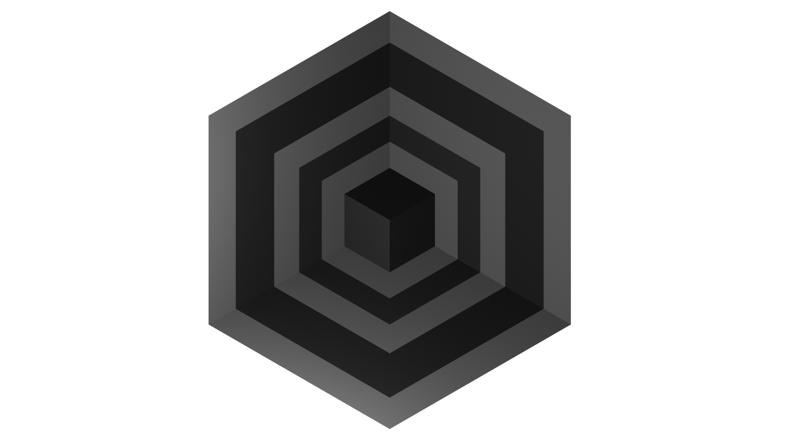

Graduation Project

Nexus is a high-level C++ networking library built on top of ASIO, designed as my graduation project at DAE. The central question was whether low-level networking complexity could be abstracted into a developer-friendly API without sacrificing the performance that online multiplayer games demand.
The library was benchmarked against ENet and raw ASIO across three common multiplayer patterns (connect/disconnect, ping-pong, inter-client messaging) and two performance dimensions (latency and throughput). The results showed that Nexus reduces lines of code by up to 64.5% and cyclomatic complexity by up to 71.9% compared to ENet, while maintaining competitive latency, though with a throughput trade-off introduced by the message abstraction layer.
nxs::Server, nxs::Client, and nxs::Connection
classes with event handler callbacks. This lets users implement a server in a handful of lines rather than
managing io_context, acceptors, and async chains directly.
Message<T> carries a
typed header and a variable-size byte payload, serialised into a contiguous buffer before
sending. Custom handling for std::string is built in.nxs::Nexus::Init(). This means the user's game loop is
never blocked by networking, and adding Nexus to an existing game is as simple as
initialising it alongside the game loop.windows-latest, ubuntu-latest,
and macos-latest on every push. Release binaries are uploaded as artifacts
automatically. Cross-platform compatibility was validated in practice by running the
demo server on a Steam Deck (Linux) with Windows PCs as clients.Message abstraction layer, a conscious trade-off documented in the research
paper.